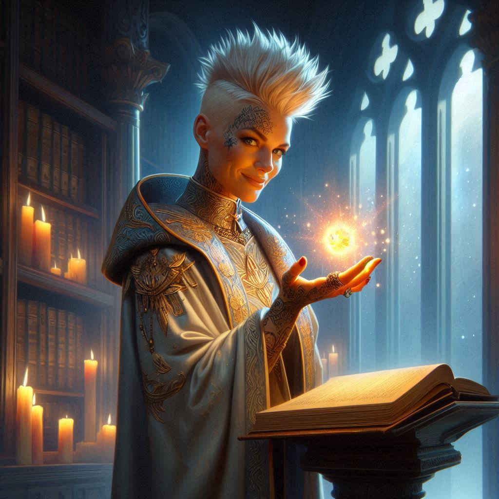
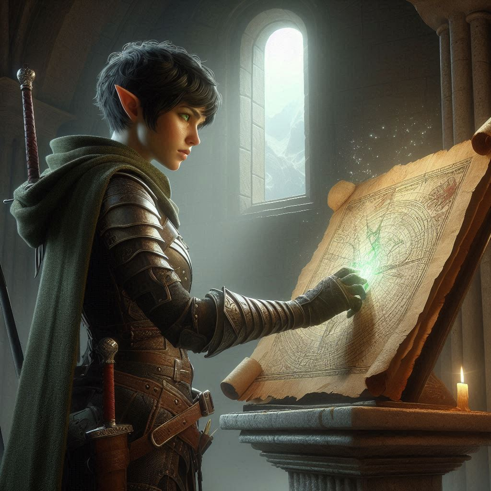

Liora's Hint
The streets of Belladonna are quiet as you slip away from the village, your destination looming large in your mind—the Royal Library. The other half of the map, the key to finding Jorsh and stopping whatever madness he’s set in motion, waits within the hallowed walls of the royal archives. You’ve heard stories about the magical protections guarding the ancient tomes and relics housed there. Nothing you can’t handle, right?
Still, as you approach the towering spires of the royal palace, the weight of what you're about to do presses down on you. The Library is no ordinary collection of scrolls and dusty volumes—it's a fortress of knowledge, safeguarded by spells older than the kingdom itself. A thrill runs through you, part excitement, part dread.
You slip through the shadows, careful to avoid the royal guards patrolling the grounds. Each step closer to the grand entrance feels like a gamble. You remember the Elder's words about the map, how dangerous it is if it falls into the wrong hands. If Jorsh has one half, it means he’s already ahead of you. The thought makes your pulse quicken. You have to get the other half before he does.
The Library looms before you now, its towering oak doors inscribed with runes that pulse faintly in the moonlight. You take a deep breath, steeling yourself. This is it.
You push the doors open just enough to slip inside, heart pounding in your chest as you step into the massive hall. Rows of towering bookshelves stretch out before you, each filled with ancient knowledge. The air smells of parchment, ink, and magic—an unsettling combination that makes your skin prickle.
Ahead, a set of marble stairs leads down to the lower levels. You know from stories that the most valuable—and dangerous—artifacts are kept beneath the surface, where only a select few are allowed access. But you’ve never been one to follow the rules.
As you descend into the depths of the library, your footsteps soft on the stone, you can feel the magic thickening in the air. It presses against your skin, a silent warning. Wards are everywhere, invisible but potent. One wrong move, and you’ll be trapped—or worse. You remember Onyx’s words: “The other half is hidden. Protected. And even if you find it, you won’t be able to use it.”
You shake off the doubt. You’ll deal with the “using it” part later. Right now, you need to find it.
The chamber at the bottom of the stairs is dimly lit, the flicker of enchanted torches casting eerie shadows across the ancient stone. You move cautiously, eyes scanning the room for any sign of the map. Your heart skips a beat when you spot an elaborate pedestal in the center of the room, surrounded by faintly glowing runes. It has to be there—the other half of the map.
As you step closer, your eyes locked on the pedestal, a voice suddenly cuts through the silence.
“You’re a brave one, aren’t you? Or perhaps just foolish.”
You freeze, hand instinctively reaching for the hilt of your blade. Slowly, you turn, and there she is—a figure emerging from the shadows, draped in gray velvet robes that shimmer with a subtle, unnatural glow. Her eyes are sharp, calculating, and a knowing smirk plays on her lips.
“Liora,” you breathe, recognizing the sorceress from the whispers of the court. Princess Hawthorn’s minion.
She steps closer, her presence commanding, though she barely lifts a finger. “You should have heeded the warnings, Kira,” Liora says, her voice dripping with both amusement and menace. “Royal matters are not for commoners to meddle in.”
You tense, every instinct screaming at you to defend yourself, but there’s something in her gaze that stops you. She’s not here to fight. Not yet, at least.
“I don’t have time for royal games,” you say, forcing your voice to stay steady. “I’m here for the map.”
Liora raises an eyebrow, her lips curling into a smile that doesn’t quite reach her eyes. “The map, is it? You think finding it will help you stop Jorsh? You have no idea what you’re walking into.”
You meet her gaze, unwilling to show any sign of weakness. “I’ll take my chances.”
For a moment, Liora simply stares at you, as if weighing her options. Then, with a graceful flick of her wrist, she summons a faint glow of magic between her fingers. “Perhaps,” she says softly, almost to herself, “you’ll be useful after all.”
You don’t move, watching her every gesture, every twitch of her fingers. She takes a step toward you, and the magic hovering at her fingertips pulses with an unsettling energy. “The map is hidden well, and even if you do find it, as Onyx likely told you, it’s not something just anyone can wield. But I’m not entirely without mercy.”
You blink, thrown by her words. “You’re going to help me?”
Liora tilts her head, her expression unreadable. “Consider it... a nudge in the right direction.” She moves past you, her gaze fixed on the pedestal. “The wards around the map are intricate, powerful. You’ll need more than just a sword and some stubborn courage to get through them.”
Your hand tightens on your blade, though you don’t draw it. “Why would you help me?”
Liora laughs softly, a sound that sends a chill down your spine. “Because, Kira, we both have something to gain from this. You may not see it yet, but the politics at play here go deeper than a simple map or even Jorsh’s little rebellion.” She turns to face you, her eyes glittering with something dangerous. “Let’s just say Princess Hawthorn has her own plans, and those plans may align with your little quest—for now.”
The warning in her voice is clear, but you can’t afford to turn down any advantage. You nod slowly. “Fine. What’s the clue?”
Liora steps closer, leaning in so that her breath brushes against your ear. “The key is in the light.”
Before you can ask her what she means, she steps back, her smirk returning. “Good luck, Kira,” she says, her voice light and mocking as she turns and vanishes into the shadows. “I do hope you survive.”
Her words linger in the air long after she’s gone, and for a moment, you stand frozen, trying to make sense of the encounter. But there’s no time to dwell on it. You turn back to the pedestal, her cryptic clue running through your mind.
The key is in the light.
You glance at the glowing runes surrounding the map, your heart pounding. Whatever Liora meant, you’re going to have to figure it out fast.